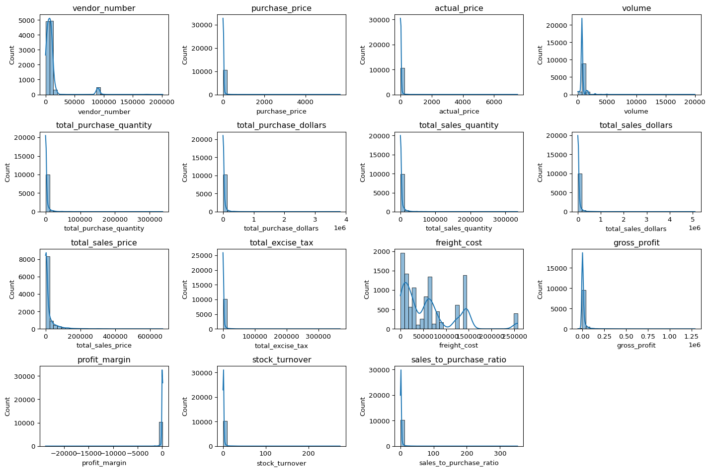
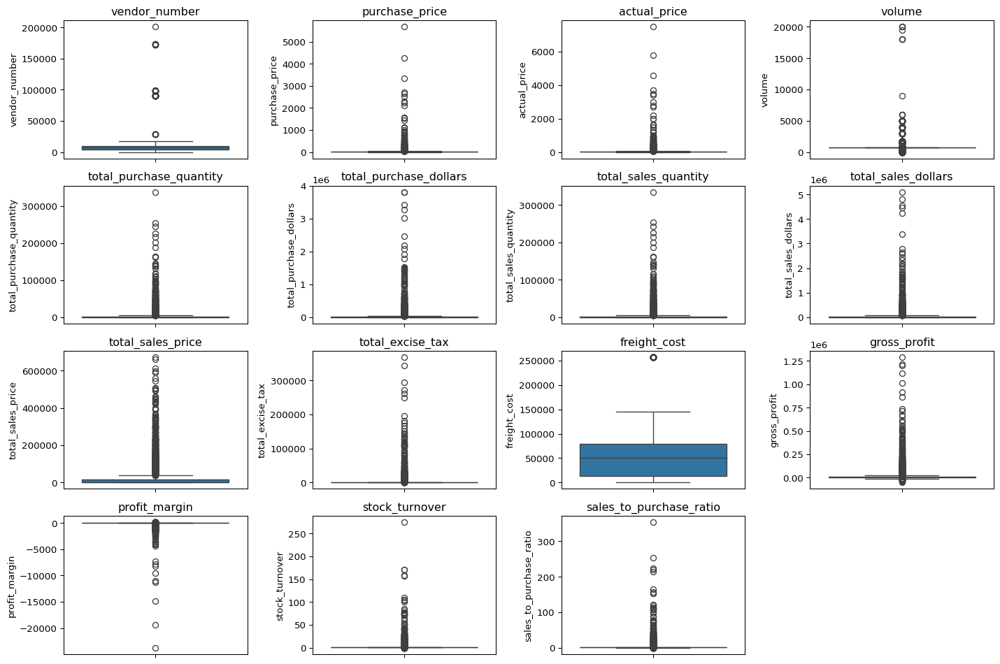
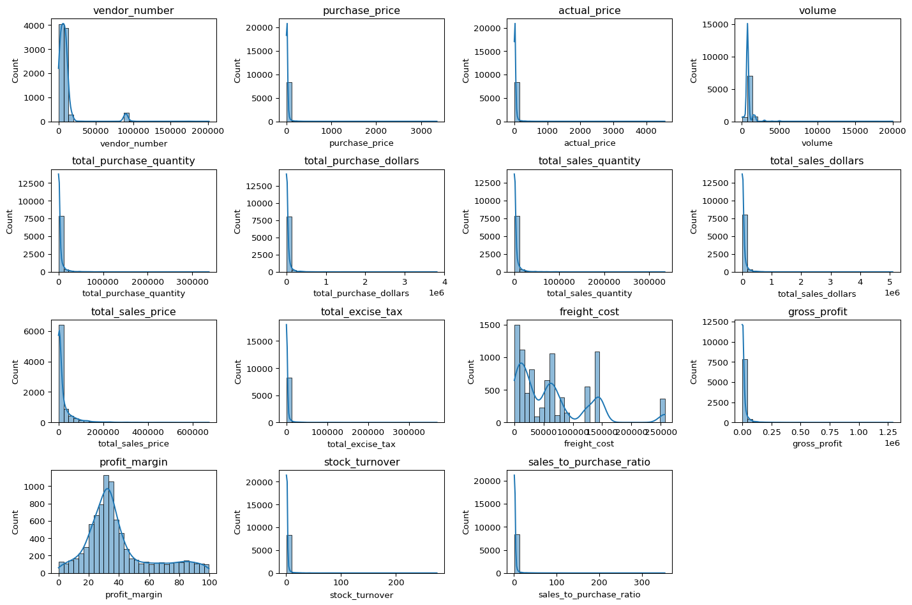
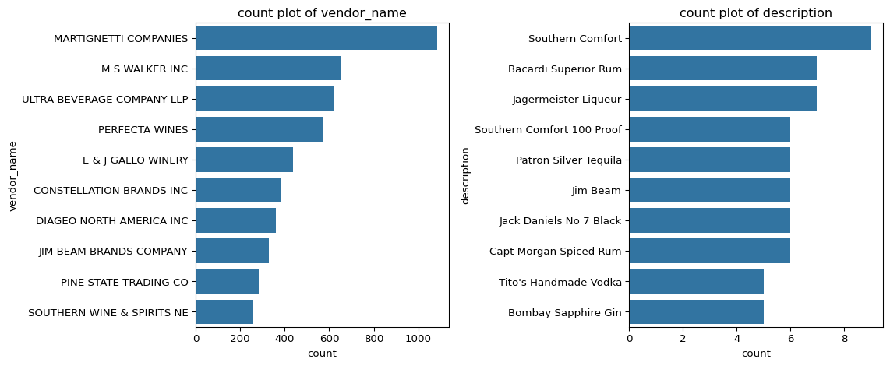
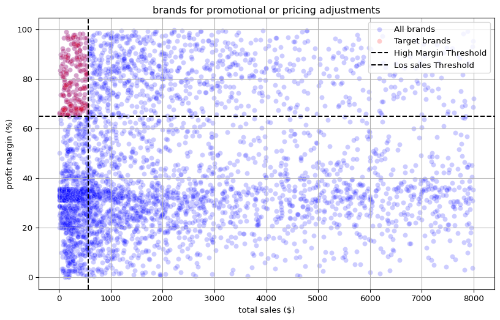
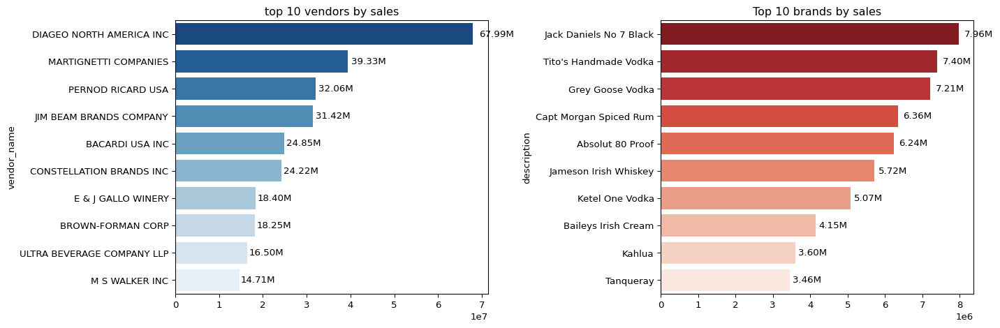
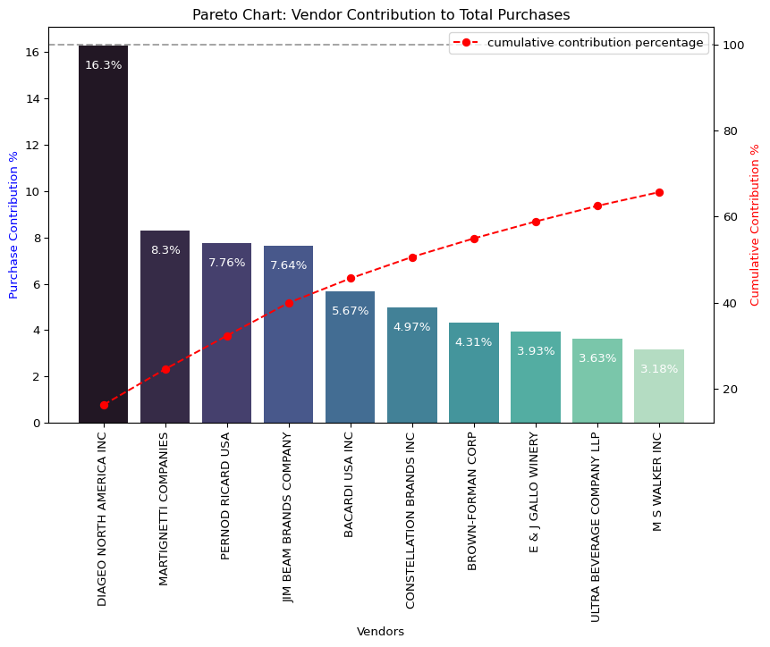
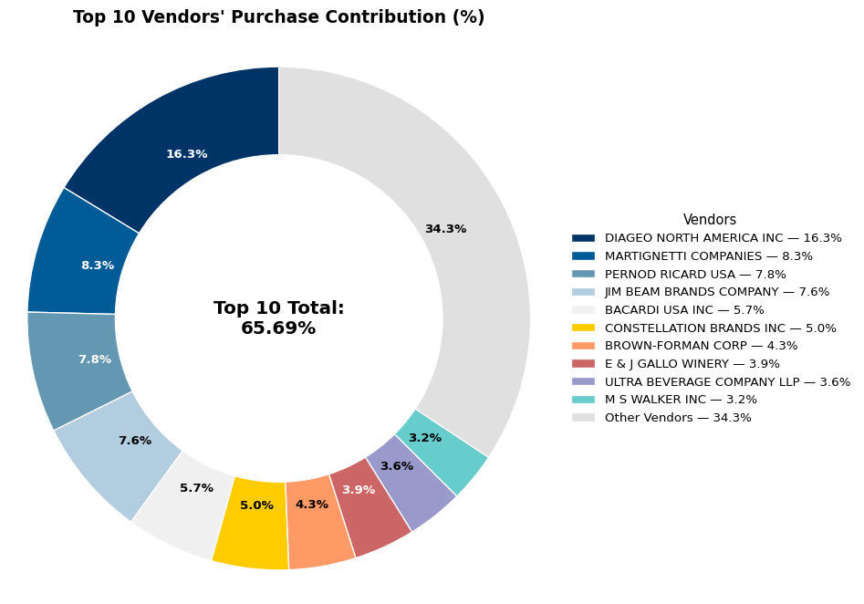
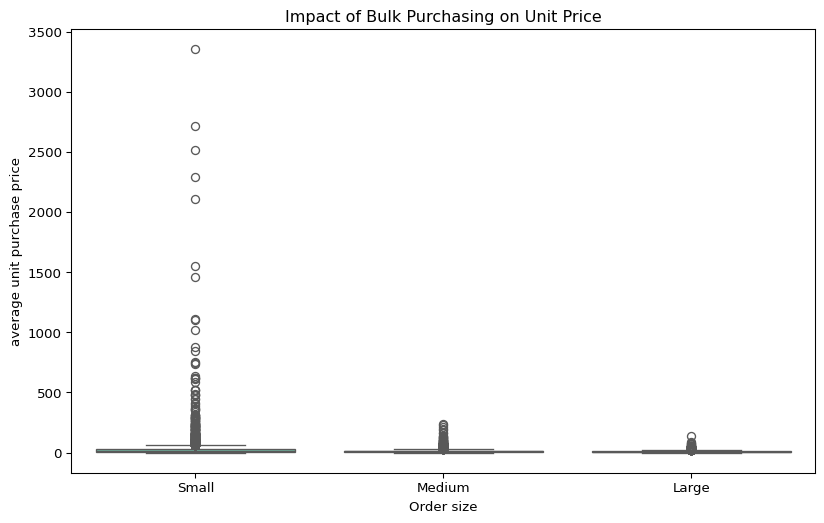
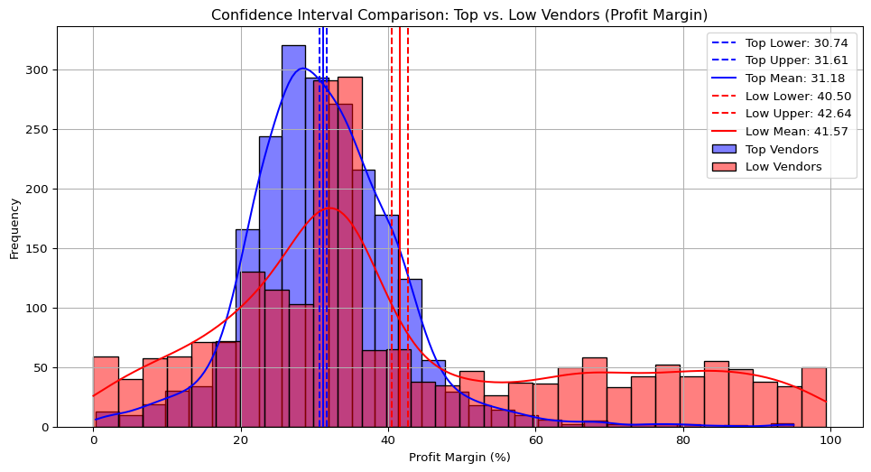

import pandas as pd
import numpy as np
import matplotlib.pyplot as plt
import seaborn as sns
import warnings
import sqlite3
from sqlalchemy import create_engine, text
from scipy.stats import ttest_ind
import scipy.stats as stats
import os
warnings.filterwarnings('ignore')🧭 Project Overview
This report analyzes retail-vendor performance by examining sales, pricing, and purchasing patterns across multiple brands and suppliers. The goal is to identify key insights that can inform better vendor management and pricing strategies.
🧾 Executive Summary and Key Recommendations
🎯 Project Overview
This project analyzed vendor performance data to identify sales efficiency, profit margins, and inventory utilization across multiple suppliers. Using SQL, Python, and statistical methods, the analysis provided insights into pricing strategies, vendor concentration, and profitability trends.
💡 Key Findings
Vendor Concentration: The top 10 vendors contribute ~66% of total purchases, indicating high procurement dependency on a few large suppliers.
High-Margin, Low-Sales Brands: Several brands have strong profit margins but weak sales — ideal candidates for targeted promotions or pricing adjustments.
Bulk Purchasing Efficiency: Larger orders benefit from ~72% lower unit costs, confirming economies of scale in purchasing.
Inventory Concerns: About $2.71M is tied up in unsold inventory, with a few vendors holding the majority of slow-moving stock.
Profit Margin Disparity: Low-performing vendors maintain higher average profit margins (~41%), while high-performing vendors operate at lower margins (~31%), a difference confirmed by t-tests (p < 0.001).
🚀 Strategic Recommendations
Promote High-Margin, Low-Sales Brands: Introduce targeted marketing, bundling, or shelf placement incentives to boost sales volume.
Negotiate with Key Vendors: Use concentration data to secure bulk discounts and improved contract terms with top suppliers.
Optimize Inventory Management: Identify slow-moving SKUs and consider clearance strategies or stock realignment to release tied-up capital.
Enhance Vendor Profitability:
- For top vendors: focus on cost optimization and pricing efficiency.
- For smaller vendors: support with distribution expansion and competitive pricing models.
Implement Performance Dashboards: Develop an automated vendor KPI dashboard (sales, margin, turnover) to track performance trends over time.
📈 Final Takeaway
The analysis reveals a dual market structure — a small set of large-volume vendors driving sales and numerous niche vendors sustaining profitability. Balancing both through data-driven pricing, procurement, and promotion strategies can enhance overall vendor ecosystem performance and improve profit growth.
⚙️ Environment Setup
We begin by importing the required Python libraries for data manipulation, statistical analysis, and visualization.
Explanation: - pandas and numpy handle data wrangling and numerical operations. - matplotlib and seaborn create professional data visualizations. - sqlalchemy manages database connections. - scipy.stats supports statistical testing. - Warnings are suppressed for cleaner outputs.
🗄️ Database Connection and Data Loading
The dataset is stored in a PostgreSQL database. We use environment variables to securely manage credentials and establish a connection.
Explanation: - .env variables keep credentials secure and prevent hardcoding sensitive information. - The connection string uses sqlalchemy and psycopg2 to create a PostgreSQL engine. - Data is extracted from the table mart.vendor_sales_summary, which contains vendor-level sales details.
🔍 Preview of the Dataset
# creating database connection
from dotenv import load_dotenv
load_dotenv()
user = os.getenv("PGUSER")
pwd = os.getenv("PGPASSWORD")
host = os.getenv("PGHOST")
port = os.getenv("PGPORT")
db = os.getenv("PGDATABASE")
engine = create_engine(f"postgresql+psycopg2://{user}:{pwd}@{host}:{port}/{db}")
df=pd.read_sql_query("select * from mart.vendor_sales_summary", engine)
df.head()| vendor_number | vendor_name | brand | description | purchase_price | actual_price | volume | total_purchase_quantity | total_purchase_dollars | total_sales_quantity | total_sales_dollars | total_sales_price | total_excise_tax | freight_cost | gross_profit | profit_margin | stock_turnover | sales_to_purchase_ratio | |
|---|---|---|---|---|---|---|---|---|---|---|---|---|---|---|---|---|---|---|
| 0 | 1128 | BROWN-FORMAN CORP | 1233 | Jack Daniels No 7 Black | 26.27 | 36.99 | 1750.0 | 145080.0 | 3811251.60 | 142049.0 | 5101919.51 | 672819.31 | 260999.20 | 68601.68 | 1290667.91 | 25.297693 | 0.979108 | 1.338647 |
| 1 | 4425 | MARTIGNETTI COMPANIES | 3405 | Tito's Handmade Vodka | 23.19 | 28.99 | 1750.0 | 164038.0 | 3804041.22 | 160247.0 | 4819073.49 | 561512.37 | 294438.66 | 144929.24 | 1015032.27 | 21.062810 | 0.976890 | 1.266830 |
| 2 | 17035 | PERNOD RICARD USA | 8068 | Absolut 80 Proof | 18.24 | 24.99 | 1750.0 | 187407.0 | 3418303.68 | 187140.0 | 4538120.60 | 461140.15 | 343854.07 | 123780.22 | 1119816.92 | 24.675786 | 0.998575 | 1.327594 |
| 3 | 3960 | DIAGEO NORTH AMERICA INC | 4261 | Capt Morgan Spiced Rum | 16.17 | 22.99 | 1750.0 | 201682.0 | 3261197.94 | 200412.0 | 4475972.88 | 420050.01 | 368242.80 | 257032.07 | 1214774.94 | 27.139908 | 0.993703 | 1.372493 |
| 4 | 3960 | DIAGEO NORTH AMERICA INC | 3545 | Ketel One Vodka | 21.89 | 29.99 | 1750.0 | 138109.0 | 3023206.01 | 135838.0 | 4223107.62 | 545778.28 | 249587.83 | 257032.07 | 1199901.61 | 28.412764 | 0.983556 | 1.396897 |
Initial Observation: The dataset provides detailed information about vendors, brands, product descriptions, and corresponding purchase and selling prices. This structure forms a strong foundation for evaluating pricing efficiency, vendor competitiveness, and sales volume performance across brands.
🗂️ Data Pipeline Overview
Before performing the analysis, multiple source tables were extracted from the PostgreSQL database and transformed into a unified analytical dataset.
Source Tables and Record Counts
| Table Name | Row Count |
|---|---|
| begin_inventory | 206,529 |
| end_inventory | 224,489 |
| purchase_prices | 12,261 |
| purchases | 2,372,474 |
| sales | 12,825,363 |
| vendor_invoice | 5,543 |
Data Modeling Approach
Raw Layer: Original transactional data loaded from multiple operational tables.
Staging Layer (stg): Standardized column formats, validated joins between purchases and sales, and removed incomplete vendor records.
Mart Layer: Created the
mart.vendor_sales_summarytable containing ~10K aggregated records by vendor and brand. This dataset served as the foundation for subsequent exploratory, statistical, and profitability analyses.
Outcome: A clean, analysis-ready dataset combining sales, purchase, inventory, and vendor-level information — enabling precise performance and margin evaluations.
🔍 Exploratory Data Analysis (EDA)
Before proceeding with advanced modeling or statistical testing, it’s essential to explore the dataset to understand its structure, detect anomalies, and identify patterns.
Previously, we examined multiple tables in the database to determine which key variables should be included in our final dataset. In this phase, we analyze the resultant table — mart.vendor_sales_summary — to assess data quality and distribution across all features.
📊 Summary Statistics
The table below summarizes key descriptive statistics for all numeric and categorical variables in the dataset. This helps identify missing values, detect potential outliers, and understand central tendencies and variability.
Key Insights from Summary Statistics: - The dataset contains 10,692 records, representing multiple vendors and brands across a wide range of products. - vendor_name has 128 unique vendors, while brand shows over 10,600 unique entries, suggesting that most brands are tied to specific vendors. - purchase_price (mean ≈ 24.38, max ≈ 5681.81) and actual_price (mean ≈ 35.64, max ≈ 7499.99) show extreme upper outliers, possibly reflecting premium or imported items. - profit_margin has a mean of -15.89 with a very large standard deviation (≈ 447), indicating that several products were sold below cost or with inconsistent pricing. - gross_profit ranges widely (from -52,002 to 1,290,667), confirming the presence of both profitable and loss-making transactions. - The sales_to_purchase_ratio varies dramatically (mean ≈ 2.55, max ≈ 352.9), showing substantial disparities in how efficiently vendors convert purchases into sales. - stock_turnover values are generally low (median ≈ 0.98), suggesting slow-moving inventory for many vendors, with a few outliers that exhibit rapid turnover. - Columns like total_sales_dollars and total_purchase_dollars have high variance, reflecting significant differences in vendor scale — some vendors dominate sales volume, while others operate in niche segments.
Data Quality Observations: - A few metrics (e.g., total_sales_quantity, gross_profit, profit_margin) have slightly fewer observations than total rows, indicating missing data in certain vendor entries. - Large standard deviations across most numeric columns highlight potential skewness and heavy-tailed distributions, which will require transformation or outlier handling.
pd.read_sql_query("select * from mart.vendor_sales_summary", engine)
#summary statistics.
df.describe().T| count | mean | std | min | 25% | 50% | 75% | max | |
|---|---|---|---|---|---|---|---|---|
| vendor_number | 10692.0 | 10650.649458 | 18753.519148 | 2.000000 | 3951.000000 | 7153.000000 | 9552.000000 | 2.013590e+05 |
| purchase_price | 10692.0 | 24.385303 | 109.269375 | 0.360000 | 6.840000 | 10.455000 | 19.482500 | 5.681810e+03 |
| actual_price | 10692.0 | 35.643671 | 148.246016 | 0.490000 | 10.990000 | 15.990000 | 28.990000 | 7.499990e+03 |
| volume | 10692.0 | 847.360550 | 664.309212 | 50.000000 | 750.000000 | 750.000000 | 750.000000 | 2.000000e+04 |
| total_purchase_quantity | 10692.0 | 3140.886831 | 11095.086769 | 1.000000 | 36.000000 | 262.000000 | 1975.750000 | 3.376600e+05 |
| total_purchase_dollars | 10692.0 | 30106.693372 | 123067.799627 | 0.710000 | 453.457500 | 3655.465000 | 20738.245000 | 3.811252e+06 |
| total_sales_quantity | 10514.0 | 3129.583317 | 11037.801407 | 1.000000 | 36.000000 | 280.000000 | 1985.000000 | 3.349390e+05 |
| total_sales_dollars | 10514.0 | 42954.173834 | 168977.755843 | 1.980000 | 809.820000 | 5599.700000 | 29524.250000 | 5.101920e+06 |
| total_sales_price | 10514.0 | 19111.958773 | 45264.605387 | 0.990000 | 334.890000 | 3020.085000 | 16442.477500 | 6.728193e+05 |
| total_excise_tax | 10514.0 | 1804.263569 | 11065.659557 | 0.060000 | 5.382500 | 50.425000 | 436.730000 | 3.682428e+05 |
| freight_cost | 10692.0 | 61433.763214 | 60938.458032 | 0.090000 | 14069.870000 | 50293.620000 | 79528.990000 | 2.570321e+05 |
| gross_profit | 10514.0 | 12364.618776 | 46576.616345 | -52002.780000 | 66.975000 | 1496.490000 | 8970.040000 | 1.290668e+06 |
| profit_margin | 10514.0 | -15.885227 | 447.289882 | -23730.638953 | 15.353839 | 30.778375 | 40.210967 | 9.971666e+01 |
| stock_turnover | 10514.0 | 1.735689 | 6.067081 | 0.002817 | 0.829761 | 0.983431 | 1.042183 | 2.745000e+02 |
| sales_to_purchase_ratio | 10514.0 | 2.546789 | 8.524047 | 0.004196 | 1.181388 | 1.444635 | 1.672548 | 3.529286e+02 |
📈 Distribution of Numerical Variables
The histograms below visualize the distribution of all numeric columns in the dataset. These plots reveal important characteristics of the data such as skewness, outliers, and concentration ranges.
Observations: - Most numerical variables are right-skewed, indicating a small number of vendors with extremely high values. - Metrics like total_sales_dollars and gross_profit show heavy tails, consistent with a few dominant vendors driving the majority of sales. - The profit_margin distribution contains negative values, suggesting some transactions may have been made at a loss or under promotional discounts. - Continuous variables such as freight_cost and stock_turnover show more varied patterns, warranting further analysis in subsequent sections.
numerical_cols=df.select_dtypes(include=np.number).columns
plt.figure(figsize=(15,10))
for i, col in enumerate(numerical_cols):
plt.subplot(4,4,i+1) #Adjust grid layout as needed
sns.histplot(df[col],kde=True, bins=30)
plt.title(col)
plt.tight_layout()
plt.show()
to see what are the outliers we are going to use box plots.
plt.figure(figsize=(15,10))
for i, col in enumerate(numerical_cols):
plt.subplot(4,4,i+1)
sns.boxplot(y=df[col])
plt.title(col)
plt.tight_layout()
plt.show
Summary Statistics Insights
Negative & Zero Values
- Gross Profit: Minimum value is -52,002.78, indicating losses. Some products or transactions may be selling at a loss due to high costs or selling at discounts lower than the purchase price.
- Profit Margin: Has a minimum of approximately -∞, which suggests cases where revenue is zero or even lower than costs.
- Total Sales Quantity & Sales Dollars: Minimum values are 0, meaning some products were purchased but never sold. These could be slow-moving or obsolete stock.
Outliers Indicated by High Standard Deviations
- Purchase & Actual Prices: The max values (5,681.81 & 7,499.99) are significantly higher than the mean (24.39 & 35.64), indicating potential premium products.
- Freight Cost: Huge variation, from 0.09 to 257,032.07, suggests logistics inefficiencies or bulk shipments.
- Stock Turnover: Ranges from 0 to 274.5, implying some products sell extremely fast while others remain in stock indefinitely.
- A value greater than 1 indicates that sold quantity for that product is higher than purchased quantity, possibly due to older stock being used to fulfill sales.
🧹 Data Cleaning and Preparation
After the initial exploration, it was evident that several records contained negative or zero values for key financial metrics such as gross_profit, profit_margin, and total_sales_quantity. Such inconsistencies likely stem from data entry errors, returns, or transactions not representing valid sales. To ensure analytical accuracy, these records were filtered out before proceeding with further analysis.
⚙️ Data Filtering Criteria
We retained only those records that met the following conditions: - gross_profit > 0 — ensures that only profitable or valid transactions are included. - profit_margin > 0 — removes loss-making or invalid entries. - total_sales_quantity > 0 — excludes records without actual sales activity.
After applying these filters, the dataset reduced from 10,692 to 8,564 records, removing approximately 20% of invalid or incomplete entries.
#filtering out the data by removing inconsistencies.
df= pd.read_sql_query("""
select *
from mart.vendor_sales_summary
where gross_profit>0
and profit_margin>0
and total_sales_quantity>0
""", engine)
df| vendor_number | vendor_name | brand | description | purchase_price | actual_price | volume | total_purchase_quantity | total_purchase_dollars | total_sales_quantity | total_sales_dollars | total_sales_price | total_excise_tax | freight_cost | gross_profit | profit_margin | stock_turnover | sales_to_purchase_ratio | |
|---|---|---|---|---|---|---|---|---|---|---|---|---|---|---|---|---|---|---|
| 0 | 1128 | BROWN-FORMAN CORP | 1233 | Jack Daniels No 7 Black | 26.27 | 36.99 | 1750.0 | 145080.0 | 3811251.60 | 142049 | 5101919.51 | 672819.31 | 260999.20 | 68601.68 | 1290667.91 | 25.297693 | 0.979108 | 1.338647 |
| 1 | 4425 | MARTIGNETTI COMPANIES | 3405 | Tito's Handmade Vodka | 23.19 | 28.99 | 1750.0 | 164038.0 | 3804041.22 | 160247 | 4819073.49 | 561512.37 | 294438.66 | 144929.24 | 1015032.27 | 21.062810 | 0.976890 | 1.266830 |
| 2 | 17035 | PERNOD RICARD USA | 8068 | Absolut 80 Proof | 18.24 | 24.99 | 1750.0 | 187407.0 | 3418303.68 | 187140 | 4538120.60 | 461140.15 | 343854.07 | 123780.22 | 1119816.92 | 24.675786 | 0.998575 | 1.327594 |
| 3 | 3960 | DIAGEO NORTH AMERICA INC | 4261 | Capt Morgan Spiced Rum | 16.17 | 22.99 | 1750.0 | 201682.0 | 3261197.94 | 200412 | 4475972.88 | 420050.01 | 368242.80 | 257032.07 | 1214774.94 | 27.139908 | 0.993703 | 1.372493 |
| 4 | 3960 | DIAGEO NORTH AMERICA INC | 3545 | Ketel One Vodka | 21.89 | 29.99 | 1750.0 | 138109.0 | 3023206.01 | 135838 | 4223107.62 | 545778.28 | 249587.83 | 257032.07 | 1199901.61 | 28.412764 | 0.983556 | 1.396897 |
| ... | ... | ... | ... | ... | ... | ... | ... | ... | ... | ... | ... | ... | ... | ... | ... | ... | ... | ... |
| 8559 | 9815 | WINE GROUP INC | 8527 | Concannon Glen Ellen Wh Zin | 1.32 | 4.99 | 750.0 | 2.0 | 2.64 | 5 | 15.95 | 10.96 | 0.55 | 27100.41 | 13.31 | 83.448276 | 2.500000 | 6.041667 |
| 8560 | 8004 | SAZERAC CO INC | 5683 | Dr McGillicuddy's Apple Pie | 0.39 | 0.49 | 50.0 | 6.0 | 2.34 | 134 | 65.66 | 1.47 | 7.04 | 50293.62 | 63.32 | 96.436186 | 22.333333 | 28.059829 |
| 8561 | 3924 | HEAVEN HILL DISTILLERIES | 9123 | Deep Eddy Vodka | 0.74 | 0.99 | 50.0 | 2.0 | 1.48 | 2 | 1.98 | 0.99 | 0.10 | 14069.87 | 0.50 | 25.252525 | 1.000000 | 1.337838 |
| 8562 | 3960 | DIAGEO NORTH AMERICA INC | 6127 | The Club Strawbry Margarita | 1.47 | 1.99 | 200.0 | 1.0 | 1.47 | 72 | 143.28 | 77.61 | 15.12 | 257032.07 | 141.81 | 98.974037 | 72.000000 | 97.469388 |
| 8563 | 7245 | PROXIMO SPIRITS INC. | 3065 | Three Olives Grape Vodka | 0.71 | 0.99 | 50.0 | 1.0 | 0.71 | 86 | 85.14 | 33.66 | 4.46 | 38994.78 | 84.43 | 99.166079 | 86.000000 | 119.915493 |
8564 rows × 18 columns
📊 Distribution After Cleaning
The histograms below display the distributions of numerical variables after cleaning. Compared to the earlier plots, the cleaned dataset shows reduced skewness and fewer extreme outliers, particularly for profitability and price-related columns.
Key Observations: - The profit_margin distribution now centers around 25%–40%, reflecting a more realistic profitability range. - gross_profit and total_sales_price remain right-skewed, indicating that a few large vendors still dominate total earnings — a normal characteristic of vendor sales data. - The overall spread of cost-related variables such as freight_cost has narrowed, confirming that most invalid or anomalous cost records were successfully removed. - Metrics such as stock_turnover and sales_to_purchase_ratio continue to exhibit long tails, showing operational variability among vendors that will be explored further.
Conclusion: This cleaning step ensures that subsequent analyses focus on valid, profit-generating vendor transactions, reducing bias from incorrect or incomplete data. The resulting dataset is now consistent, reliable, and ready for comparative performance analysis across vendors and brands.
plt.figure(figsize=(15,10))
for i, col in enumerate(numerical_cols):
plt.subplot(4,4,i+1) #Adjust grid layout as needed
sns.histplot(df[col],kde=True, bins=30)
plt.title(col)
plt.tight_layout()
plt.show()
🏷️ Categorical Feature Analysis
Next, we explore the key categorical variables — vendors and product descriptions — to identify the most frequent entities in the dataset.
📊 Top Vendors and Products
The charts below display the top 10 vendors and top 10 products based on record frequency.
categorical_cols= ['vendor_name', 'description']
plt.figure(figsize=(12,5))
for i, col in enumerate(categorical_cols):
plt.subplot(1,2,i+1)
sns.countplot(y=df[col], order =df[col].value_counts().index[:10]) #top 10 categories
plt.title(f"count plot of {col}")
plt.tight_layout()
plt.show()
Insights: - MARTIGNETTI COMPANIES dominates the dataset, followed by M S Walker Inc and Ultra Beverage Company LLP. - Major players like Perfecta Wines, E & J Gallo Winery, and Diageo North America Inc also have strong representation. - Among products, Southern Comfort, Bacardi Superior Rum, and Jägermeister Liqueur appear most frequently. - Repeated entries such as Southern Comfort and Southern Comfort 100 Proof suggest SKU-level tracking.
Summary: The dataset is concentrated among a few large vendors and well-known brands, indicating that future comparisons should adjust for vendor scale to ensure balanced performance insights.
🔗 Correlation Analysis
To examine how numerical variables relate to one another, we computed the correlation matrix and visualized it using a heatmap.
#correlational heatmap
plt.figure(figsize=(12,8))
correlation_matrix=df[numerical_cols].corr()
sns.heatmap(correlation_matrix, annot=True, fmt=".2f", cmap="coolwarm", linewidths=0.5)
plt.title("correlation heatmap")
plt.show()
📈 Insights from the Heatmap
- Pricing Link:
purchase_priceandactual_priceshow an almost perfect correlation (r = 0.99), confirming a cost-plus pricing strategy. - Sales–Purchase Sync: Strong correlation between
total_purchase_dollarsandtotal_sales_dollars(r = 0.96) indicates that higher procurement typically leads to higher sales. - Profit Follows Sales:
gross_profitcorrelates strongly with sales metrics (r ≈ 0.96), suggesting top-selling items contribute most to profit. - Tax Consistency:
total_excise_taxaligns closely with total sales (r = 0.98), reflecting accurate taxation. - Profit Margin Variability: Weak correlations between
profit_marginand other metrics imply inconsistent profitability across products. - Inventory Efficiency: Moderate correlation between
stock_turnoverandprofit_margin(r = 0.42) shows faster-selling products tend to be more profitable. - Vendor Neutrality:
vendor_numberhas negligible correlation with performance variables, confirming no vendor ID bias.
Summary: Sales, tax, and profit metrics are tightly linked, but profitability varies significantly across products — signaling opportunities for pricing optimization and inventory efficiency improvements.
🎯 Analysis 1 — High-Margin, Low-Sales Brands (Promo/Pricing Opportunities)
Business Objective: Find brands that sell little but have strong profit margins — prime candidates for targeted promotions or price optimization.
Step 1 — Brand-level aggregation
(Runs the first code block: build brand_performance with total_sales_dollars and mean profit_margin.)
brand_performance=df.groupby('description').agg({
'total_sales_dollars':'sum',
'profit_margin': 'mean'
}).reset_index()
brand_performance| description | total_sales_dollars | profit_margin | |
|---|---|---|---|
| 0 | (RI) 1 | 21519.09 | 18.060661 |
| 1 | .nparalleled Svgn Blanc | 1094.63 | 29.978166 |
| 2 | 10 Span Cab Svgn CC | 2703.89 | 20.937612 |
| 3 | 10 Span Chard CC | 3325.56 | 27.806445 |
| 4 | 10 Span Pnt Gris Monterey Cy | 2082.22 | 32.226182 |
| ... | ... | ... | ... |
| 7702 | Zorvino Vyds Sangiovese | 10579.03 | 29.525675 |
| 7703 | Zuccardi Q Malbec | 1639.18 | 23.981503 |
| 7704 | Zum Rsl | 10857.34 | 32.675038 |
| 7705 | Zwack Liqueur | 227.88 | 16.653502 |
| 7706 | von Buhl Jazz Rsl | 1359.11 | 90.773374 |
7707 rows × 3 columns
Step 2 — Thresholds
(Runs the second code block: compute the 15th-percentile sales and 85th-percentile margin thresholds.) These create objective cutoffs for “low sales” and “high margin.”
low_sales_threshold=brand_performance['total_sales_dollars'].quantile(0.15)
high_margin_threshold=brand_performance['profit_margin'].quantile(0.85)
print(low_sales_threshold, high_margin_threshold)560.299 64.97017552750113Step 3 — Target list
(Runs the third code block: filter into target_brands and display the table, sorted by sales.) Interpretation: Brands listed here are high-margin underperformers — strong candidates for awareness campaigns, bundling, shelf placement, or price testing.
# filter brand with low sales but high performance margins.
target_brands= brand_performance[
(brand_performance['total_sales_dollars']<=low_sales_threshold) &
(brand_performance['profit_margin']>=high_margin_threshold)
]
print("brands with low sales but high profit margins:")
display(target_brands.sort_values('total_sales_dollars'))brands with low sales but high profit margins:| description | total_sales_dollars | profit_margin | |
|---|---|---|---|
| 6199 | Santa Rita Organic Svgn Bl | 9.99 | 66.466466 |
| 2369 | Debauchery Pnt Nr | 11.58 | 65.975820 |
| 2070 | Concannon Glen Ellen Wh Zin | 15.95 | 83.448276 |
| 2188 | Crown Royal Apple | 27.86 | 89.806174 |
| 6237 | Sauza Sprklg Wild Berry Marg | 27.96 | 82.153076 |
| ... | ... | ... | ... |
| 5074 | Nanbu Bijin Southern Beauty | 535.68 | 76.747312 |
| 2271 | Dad's Hat Rye Whiskey | 538.89 | 81.851584 |
| 57 | A Bichot Clos Marechaudes | 539.94 | 67.740860 |
| 6245 | Sbragia Home Ranch Merlot | 549.75 | 66.444748 |
| 3326 | Goulee Cos d'Estournel 10 | 558.87 | 69.434752 |
198 rows × 3 columns
Step 4 — Scatter plot (all brands)
(Runs the fourth code block: scatter of total_sales_dollars vs. profit_margin, with thresholds and highlighted targets.) Read the chart: - Upper-left quadrant = low sales / high margin → focus. - Lower-right = high sales / low margin → margin recovery opportunities (outside this analysis’ scope).
plt.figure(figsize=(10,6))
sns.scatterplot(data=brand_performance, x='total_sales_dollars', y='profit_margin', color='blue', label='All brands', alpha=0.2)
sns.scatterplot(data=target_brands, x='total_sales_dollars', y='profit_margin', color='red', label='Target brands', alpha=0.2)
plt.axhline(high_margin_threshold, linestyle='--', color='black', label="High Margin Threshold")
plt.axvline(low_sales_threshold, linestyle='--', color='black', label="Los sales Threshold")
plt.xlabel("total sales ($)")
plt.ylabel("profit margin (%)")
plt.title("brands for promotional or pricing adjustments")
plt.legend()
plt.grid(True)
plt.show()
Step 5 — Zoomed view (mitigate outliers)
(Runs the fifth code block: re-plot after subsetting brands with total_sales_dollars < 8,000.) This makes low-revenue, high-margin brands easier to spot visually.
brand_performance_segment= brand_performance[brand_performance['total_sales_dollars']<8000]
plt.figure(figsize=(10,6))
sns.scatterplot(data=brand_performance_segment, x='total_sales_dollars', y='profit_margin', color='blue', label='All brands', alpha=0.2)
sns.scatterplot(data=target_brands, x='total_sales_dollars', y='profit_margin', color='red', label='Target brands', alpha=0.2)
plt.axhline(high_margin_threshold, linestyle='--', color='black', label="High Margin Threshold")
plt.axvline(low_sales_threshold, linestyle='--', color='black', label="Los sales Threshold")
plt.xlabel("total sales ($)")
plt.ylabel("profit margin (%)")
plt.title("brands for promotional or pricing adjustments")
plt.legend()
plt.grid(True)
plt.show()
🧩 Findings
The red cluster in the upper-left quadrant represents brands with high profit margins but low total sales. These are strong candidates for promotional campaigns or price adjustments to boost volume without hurting margins.
The majority of brands fall below the high-margin threshold, showing that overall profitability is modest and could benefit from margin optimization.
The distinct gap between the red and blue regions indicates that these high-margin brands are systematically underperforming in sales, not just random outliers.
Since these brands already yield healthy profit percentages, even a small increase in sales volume can have a large incremental impact on total profit.
The scatter confirms a non-linear sales–margin relationship — boosting sales does not necessarily erode margins, suggesting room for controlled promotions or cross-selling.
Business Takeaway: A subset of brands with high profitability but low visibility presents an immediate opportunity. Strategic actions such as targeted advertising, bundling, or slight price reductions could enhance turnover while maintaining strong margins.
💰 Analysis 2 — Top Vendors and Brands by Sales
Business Objective: Identify which vendors and brands generate the highest total sales to highlight key revenue drivers.
top_vendors= df.groupby("vendor_name")["total_sales_dollars"].sum().nlargest(10)
top_brands= df.groupby("description")["total_sales_dollars"].sum().nlargest(10)
top_vendorsvendor_name
DIAGEO NORTH AMERICA INC 67990099.42
MARTIGNETTI COMPANIES 39330359.36
PERNOD RICARD USA 32063196.19
JIM BEAM BRANDS COMPANY 31423020.46
BACARDI USA INC 24854817.14
CONSTELLATION BRANDS INC 24218745.65
E & J GALLO WINERY 18399899.46
BROWN-FORMAN CORP 18247230.65
ULTRA BEVERAGE COMPANY LLP 16502544.31
M S WALKER INC 14706458.51
Name: total_sales_dollars, dtype: float64📊 Summary
We aggregated total_sales_dollars at both the vendor and brand (description) levels, selecting the top 10 performers by total sales.
Top Vendors (by total sales): - DIAGEO NORTH AMERICA INC leads with approximately $67.99M, far exceeding other distributors. - MARTIGNETTI COMPANIES and PERNOD RICARD USA follow with $39.33M and $32.06M, respectively. - The top five vendors collectively contribute a major share of overall revenue, showing strong concentration in a few market leaders.
Top Brands (by total sales): - Jack Daniels No 7 Black tops the list at $7.96M, closely followed by Tito’s Handmade Vodka ($7.40M) and Grey Goose Vodka ($7.21M). - Well-known premium spirits dominate the top 10 list, emphasizing brand recognition and consumer loyalty as key performance drivers.
def format_dollars(value):
if value >= 1_000_000:
return f"{value/1_000_000:.2f}M"
elif value >= 1_000:
return f"{value/1_000:.2f}k"
else:
return str(value)top_brands.apply(lambda x: format_dollars(x))description
Jack Daniels No 7 Black 7.96M
Tito's Handmade Vodka 7.40M
Grey Goose Vodka 7.21M
Capt Morgan Spiced Rum 6.36M
Absolut 80 Proof 6.24M
Jameson Irish Whiskey 5.72M
Ketel One Vodka 5.07M
Baileys Irish Cream 4.15M
Kahlua 3.60M
Tanqueray 3.46M
Name: total_sales_dollars, dtype: objectplt.figure(figsize=(15,5))
#plot for top vendors
plt.subplot(1,2,1)
ax1=sns.barplot(y=top_vendors.index, x=top_vendors.values, palette="Blues_r")
plt.title("top 10 vendors by sales")
for bar in ax1.patches:
ax1.text(bar.get_width()+ (bar.get_width()*0.02),
bar.get_y()+ bar.get_height()/2,
format_dollars(bar.get_width()),
ha='left', va='center', fontsize=10, color='black')
# plot for top brands
plt.subplot(1,2,2)
ax2=sns.barplot(y=top_brands.index.astype(str), x=top_brands.values, palette="Reds_r")
plt.title("Top 10 brands by sales")
for bar in ax2.patches:
ax2.text(bar.get_width()+ (bar.get_width()*0.02),
bar.get_y()+bar.get_height()/2,
format_dollars(bar.get_width()),
ha='left', va='center', fontsize=10, color='black')
plt.tight_layout()
plt.show()
📈 Insights
- The vendor landscape is top-heavy, with a small number of suppliers accounting for most sales — suggesting strong vendor leverage and bargaining power.
- Whiskey and vodka brands dominate revenue, confirming high demand for premium liquor categories.
- Smaller vendors and emerging brands might need marketing support or product diversification to compete in this concentrated market.
Summary Takeaway: The sales distribution underscores a highly consolidated market led by major vendors and globally recognized brands. These insights can guide partnership prioritization, negotiation strategy, and promotional planning.
📦 Analysis 3 — Vendor Contribution to Total Purchases
Business Objective: Identify which vendors contribute the most to total purchase dollars to understand supplier concentration and purchasing dependency.
📊 Overview
The dataset was grouped by vendor_name to calculate: - Total purchase dollars, sales dollars, and gross profit per vendor. - Each vendor’s purchase contribution percentage (share of total purchases). - The cumulative contribution to visualize top contributors via a Pareto chart.
vendor_performance= df.groupby('vendor_name').agg({
'total_purchase_dollars': 'sum',
'gross_profit': 'sum',
'total_sales_dollars': 'sum'
}).reset_index()
vendor_performance| vendor_name | total_purchase_dollars | gross_profit | total_sales_dollars | |
|---|---|---|---|---|
| 0 | ADAMBA IMPORTS INTL INC | 446.16 | 258.37 | 704.53 |
| 1 | ALISA CARR BEVERAGES | 25698.12 | 78772.82 | 104470.94 |
| 2 | ALTAMAR BRANDS LLC | 11706.20 | 4000.61 | 15706.81 |
| 3 | AMERICAN SPIRITS EXCHANGE | 934.08 | 577.08 | 1511.16 |
| 4 | AMERICAN VINTAGE BEVERAGE | 104435.68 | 35167.85 | 139603.53 |
| ... | ... | ... | ... | ... |
| 114 | WEIN BAUER INC | 42694.64 | 13522.49 | 56217.13 |
| 115 | WESTERN SPIRITS BEVERAGE CO | 298416.86 | 106837.97 | 405254.83 |
| 116 | WILLIAM GRANT & SONS INC | 5876538.26 | 1693337.94 | 7569876.20 |
| 117 | WINE GROUP INC | 5203801.17 | 3100242.11 | 8304043.28 |
| 118 | ZORVINO VINEYARDS | 86122.71 | 38066.88 | 124189.59 |
119 rows × 4 columns
Here, I am adding a new column for purchase contribution
vendor_performance['purchase_contribution_percentage']= 100*vendor_performance['total_purchase_dollars']/vendor_performance['total_purchase_dollars'].sum()
vendor_performance=round(vendor_performance.sort_values('purchase_contribution_percentage', ascending=False), 2)The Top vendors can be seen the the table below.
top_vendors=vendor_performance.head(10)
top_vendors['total_sales_dollars']=top_vendors['total_sales_dollars'].apply(format_dollars)
top_vendors['total_purchase_dollars']=top_vendors['total_purchase_dollars'].apply(format_dollars)
top_vendors['gross_profit']=top_vendors['gross_profit'].apply(format_dollars)
top_vendors| vendor_name | total_purchase_dollars | gross_profit | total_sales_dollars | purchase_contribution_percentage | |
|---|---|---|---|---|---|
| 25 | DIAGEO NORTH AMERICA INC | 50.10M | 17.89M | 67.99M | 16.30 |
| 57 | MARTIGNETTI COMPANIES | 25.50M | 13.83M | 39.33M | 8.30 |
| 68 | PERNOD RICARD USA | 23.85M | 8.21M | 32.06M | 7.76 |
| 46 | JIM BEAM BRANDS COMPANY | 23.49M | 7.93M | 31.42M | 7.64 |
| 6 | BACARDI USA INC | 17.43M | 7.42M | 24.85M | 5.67 |
| 20 | CONSTELLATION BRANDS INC | 15.27M | 8.95M | 24.22M | 4.97 |
| 11 | BROWN-FORMAN CORP | 13.24M | 5.01M | 18.25M | 4.31 |
| 30 | E & J GALLO WINERY | 12.07M | 6.33M | 18.40M | 3.93 |
| 106 | ULTRA BEVERAGE COMPANY LLP | 11.17M | 5.34M | 16.50M | 3.63 |
| 53 | M S WALKER INC | 9.76M | 4.94M | 14.71M | 3.18 |
top_vendors['cumulative_contribution_percentage']=top_vendors['purchase_contribution_percentage'].cumsum()# Create the figure and primary axis
fig, ax1 = plt.subplots(figsize=(10, 6))
# --- Bar plot for Purchase Contribution % ---
sns.barplot(
x=top_vendors['vendor_name'],
y=top_vendors['purchase_contribution_percentage'],
palette="mako",
ax=ax1
)
# Add value labels on bars
for i, value in enumerate(top_vendors['purchase_contribution_percentage']):
ax1.text(i, value - 1, f"{value}%", ha='center', fontsize=10, color='white')
# --- Line plot for Cumulative Contribution % ---
ax2 = ax1.twinx()
ax2.plot(
top_vendors['vendor_name'],
top_vendors['cumulative_contribution_percentage'],
color='red',
marker='o',
linestyle='dashed',
label='cumulative contribution percentage'
)
# --- Axis labels and formatting ---
ax1.set_xticklabels(top_vendors['vendor_name'], rotation=90)
ax1.set_ylabel('Purchase Contribution %', color='blue')
ax2.set_ylabel('Cumulative Contribution %', color='red')
ax1.set_xlabel('Vendors')
ax1.set_title('Pareto Chart: Vendor Contribution to Total Purchases')
# Horizontal reference line
ax2.axhline(y=100, color='gray', linestyle='dashed', alpha=0.7)
# Legend and display
ax2.legend(loc='upper right')
plt.show()
🔎 Key Findings
- DIAGEO NORTH AMERICA INC dominates with 16.3% of total purchases — nearly double that of the next vendor.
- MARTIGNETTI COMPANIES, PERNOD RICARD USA, and JIM BEAM BRANDS COMPANY each contribute around 7–8%, forming the next major tier.
- The top 10 vendors together account for roughly 65% of total purchases, confirming a highly concentrated supplier base.
- The cumulative line (red) in the Pareto chart illustrates a steep initial climb, showing that a small set of vendors drive the majority of procurement spend.
💡 Business Insight
- The 80/20 rule is evident — a few key vendors control most purchasing activity.
- This suggests opportunities for:
- Negotiating better terms with top suppliers.
- Diversifying vendors to reduce dependency risk.
- Prioritizing performance monitoring for high-volume vendors.
Summary: Procurement activity is heavily concentrated among a few suppliers, emphasizing the need for strategic vendor management and risk mitigation.
🧮 Analysis 4 — Vendor Dependency and Bulk Purchase Efficiency
Question 1 — How much of total procurement depends on top vendors?
The top 10 vendors collectively account for 65.69% of total purchases, as shown below. This indicates a strong dependency on a small number of suppliers.
total_contribution = round(top_vendors['purchase_contribution_percentage'].sum(), 2)
print(f"Total Purchase Contribution of top 10 vendors is {total_contribution} %")Total Purchase Contribution of top 10 vendors is 65.69 %Key Insights: - Procurement is highly concentrated, with DIAGEO NORTH AMERICA INC alone contributing over 16% of total purchases. - The donut chart clearly shows that nearly two-thirds of all purchase dollars flow through these top vendors. - Such dependence increases both bargaining leverage (for discounts) and risk exposure (in case of supply disruption).
Business Implication: Strategic diversification could reduce procurement risk while maintaining favorable pricing relationships with key suppliers.
import matplotlib.colors as mcolors
# Prepare data
vendors = list(top_vendors['vendor_name'].values)
purchase_contributions = list(top_vendors['purchase_contribution_percentage'].values)
# Calculate remaining contribution
remaining_contribution = 100 - total_contribution
# Append "Other Vendors" category
vendors.append("Other Vendors")
purchase_contributions.append(remaining_contribution)
# --- Donut Chart ---
fig, ax = plt.subplots(figsize=(10, 7)) # a bit wider for legend
def _autopct_with_contrast(pct, all_vals):
# Determine index of this wedge
total = sum(all_vals)
value = pct * total / 100
return f"{pct:.1f}%" if pct >= 3 else ""
def get_contrast_color(hex_color):
r, g, b = mcolors.to_rgb(hex_color)
brightness = (r*0.299 + g*0.587 + b*0.114)
return "#FFFFFF" if brightness < 0.55 else "#000000"
# Show % labels only for slices above a threshold
def _autopct(pct):
return f"{pct:.1f}%" if pct >= 3 else ""
colors = ["#003366", "#005b96", "#6497b1", "#b3cde0", "#f0f0f0",
"#ffcc00", "#ff9966", "#cc6666", "#9999cc", "#66cccc", "#e0e0e0"]
# Use wedgeprops to make a donut directly (no separate white circle)
wedges, texts, autotexts = ax.pie(
purchase_contributions,
labels=None, # move labels to legend (less clutter)
autopct=lambda pct: _autopct_with_contrast(pct, purchase_contributions),
startangle=90, # standard for pies, reads better
pctdistance=0.75, # bring % inwards a touch
wedgeprops={"width": 0.35, "edgecolor": "white"}, # crisp separation
textprops={"fontsize": 10},
colors= colors
)
for i, autotext in enumerate(autotexts):
autotext.set_color(get_contrast_color(colors[i]))
autotext.set_fontsize(10)
autotext.set_fontweight("bold")
# Ensure circle aspect
ax.axis("equal")
# Center text (total)
ax.text(
0, 0,
f"Top 10 Total:\n{total_contribution:.2f}%",
ha="center", va="center",
fontsize=15, fontweight="bold"
)
# Build a clean legend on the right with vendor name + % value
# (Keeps plot uncluttered and ensures long names don't overlap)
legend_labels = [f"{v} — {pc:.1f}%" for v, pc in zip(vendors, purchase_contributions)]
ax.legend(
wedges,
legend_labels,
title="Vendors",
loc="center left",
bbox_to_anchor=(1.02, 0.5),
frameon=False,
fontsize=10,
title_fontsize=11
)
# Title + subtle subtitle
ax.set_title("Top 10 Vendors' Purchase Contribution (%)", pad=16, fontsize=14, fontweight="bold")
plt.tight_layout()
plt.show()
Question 2 — Does purchasing in bulk reduce the unit price?
To evaluate the impact of order size on unit purchase price, purchases were grouped into Small, Medium, and Large quantile-based categories.
df['unit_purchase_price']=df['total_purchase_dollars']/df['total_purchase_quantity']
#creating 3 equal quantile buckets.
df['order_size']= pd.qcut(df['total_purchase_quantity'], q=3, labels=["Small", "Medium", "Large"])
df[['order_size', 'total_purchase_quantity']]| order_size | total_purchase_quantity | |
|---|---|---|
| 0 | Large | 145080.0 |
| 1 | Large | 164038.0 |
| 2 | Large | 187407.0 |
| 3 | Large | 201682.0 |
| 4 | Large | 138109.0 |
| ... | ... | ... |
| 8559 | Small | 2.0 |
| 8560 | Small | 6.0 |
| 8561 | Small | 2.0 |
| 8562 | Small | 1.0 |
| 8563 | Small | 1.0 |
8564 rows × 2 columns
calculating mean for each category
df.groupby('order_size')[['unit_purchase_price']].mean()
plt.figure(figsize=(10,6))
sns.boxplot(data=df, x="order_size", y="unit_purchase_price", palette="Set2")
plt.title("Impact of Bulk Purchasing on Unit Price")
plt.xlabel("Order size")
plt.ylabel("average unit purchase price")
plt.show()
Findings: - Large orders have the lowest average unit price (~$10.78 per unit), confirming the effect of economies of scale. - The price difference between Small and Large orders is significant — roughly a 72% reduction in cost per unit. - This suggests vendors offering volume-based pricing effectively incentivize bulk purchasing, leading to higher total sales despite lower per-unit revenue.
Business Takeaway: Bulk purchasing is cost-efficient and should be leveraged where feasible. However, it must be balanced against inventory holding costs and cash flow constraints to ensure sustainable profitability.
📦 Analysis 5 — Inventory Turnover and Capital Locked in Unsold Stock
Business Objective: Identify vendors with low stock turnover (slow-moving products) and estimate the capital tied up in unsold inventory.
🔄 Low Inventory Turnover
The vendors below have an average stock turnover below 1, indicating slow-moving or stagnant inventory. This may signal over-purchasing, weak demand, or inefficient stock rotation.
Lowest Turnover Vendors: - ALISA CARR BEVERAGES — 0.62 - HIGHLAND WINE MERCHANTS LLC — 0.71 - PARK STREET IMPORTS LLC — 0.75 - DUNN WINE BROKERS — 0.77 - TAMWORTH DISTILLING — 0.80
Interpretation: A stock turnover below 1 means these vendors sell their entire inventory less than once per year, leading to excess holding costs and reduced liquidity.
df[df['stock_turnover']<1].groupby('vendor_name')[['stock_turnover']].mean().sort_values('stock_turnover', ascending=True).head(10)| stock_turnover | |
|---|---|
| vendor_name | |
| ALISA CARR BEVERAGES | 0.615385 |
| HIGHLAND WINE MERCHANTS LLC | 0.708333 |
| PARK STREET IMPORTS LLC | 0.751306 |
| Circa Wines | 0.755676 |
| Dunn Wine Brokers | 0.766022 |
| CENTEUR IMPORTS LLC | 0.773953 |
| SMOKY QUARTZ DISTILLERY LLC | 0.783835 |
| TAMWORTH DISTILLING | 0.797078 |
| THE IMPORTED GRAPE LLC | 0.807569 |
| WALPOLE MTN VIEW WINERY | 0.820548 |
💰 Capital Locked in Unsold Inventory
Across all vendors, the total unsold capital amounts to approximately $2.71M, representing the value of stock purchased but not yet sold.
Top Vendors by Unsold Capital: - DIAGEO NORTH AMERICA INC — $722K - JIM BEAM BRANDS COMPANY — $555K - PERNOD RICARD USA — $471K - WILLIAM GRANT & SONS INC — $402K - E & J GALLO WINERY — $228K
df['unsold_inventory_value']=(df['total_purchase_quantity']-df['total_sales_quantity'])* df['purchase_price']
print('total_unsold_capital:', format_dollars(df['unsold_inventory_value'].sum()))total_unsold_capital: 2.71M# Aggregate Capital Locked per Vendor
inventory_value_per_vendor = df.groupby("vendor_name")["unsold_inventory_value"].sum().reset_index()
# Sort Vendors with the Highest Locked Capital
inventory_value_per_vendor = inventory_value_per_vendor.sort_values(by="unsold_inventory_value", ascending=False)
inventory_value_per_vendor['unsold_inventory_value'] = inventory_value_per_vendor['unsold_inventory_value'].apply(format_dollars)
inventory_value_per_vendor.head(10)| vendor_name | unsold_inventory_value | |
|---|---|---|
| 25 | DIAGEO NORTH AMERICA INC | 722.21k |
| 46 | JIM BEAM BRANDS COMPANY | 554.67k |
| 68 | PERNOD RICARD USA | 470.63k |
| 116 | WILLIAM GRANT & SONS INC | 401.96k |
| 30 | E & J GALLO WINERY | 228.28k |
| 79 | SAZERAC CO INC | 198.44k |
| 11 | BROWN-FORMAN CORP | 177.73k |
| 20 | CONSTELLATION BRANDS INC | 133.62k |
| 61 | MOET HENNESSY USA INC | 126.48k |
| 77 | REMY COINTREAU USA INC | 118.60k |
📈 Insights
- A significant share of capital is tied up in inventory from top-performing vendors, implying potential overstocking.
- Slow-moving products could benefit from discounting, bundling, or targeted promotions to clear excess inventory.
- Continuous monitoring of stock turnover ratio is crucial to maintain optimal working capital efficiency.
Summary: Approximately $2.71M is locked in unsold stock, with several large vendors contributing most of it. Improving turnover through inventory management and demand forecasting can free up capital and improve cash flow.
💹 Analysis 6 — Profit Margin Confidence Intervals for Top vs. Low Vendors
Business Objective: Compare profit margins between top-performing vendors (high sales) and low-performing vendors (low sales) to understand profitability patterns.
top_threshold= df['total_sales_dollars'].quantile(0.75)
low_threshold= df['total_sales_dollars'].quantile(0.25)top_vendors = df[df["total_sales_dollars"] >= top_threshold]["profit_margin"].dropna()
low_vendors = df[df["total_sales_dollars"] <= low_threshold]["profit_margin"].dropna()🧮 Statistical Summary
| Vendor Group | Mean Profit Margin (%) | 95% Confidence Interval |
|---|---|---|
| Top Vendors | 31.18 | (30.74, 31.61) |
| Low Vendors | 41.57 | (40.50, 42.64) |
# to calculate the confidence interval
def confidence_interval(data, confidence=0.95):
mean_val=np.mean(data)
std_err=np.std(data,ddof=1)/np.sqrt(len(data)) #standard error
t_critical=stats.t.ppf((1+confidence)/2, df=len(data)-1)
margin_of_error= t_critical *std_err
return mean_val, mean_val-margin_of_error, mean_val+margin_of_error# Compute confidence intervals for top and low vendors
top_mean, top_lower, top_upper = confidence_interval(top_vendors)
low_mean, low_lower, low_upper = confidence_interval(low_vendors)
# Print results
print(f"Top Vendors 95% CI: ({top_lower:.2f}, {top_upper:.2f}), Mean: {top_mean:.2f}")
print(f"Low Vendors 95% CI: ({low_lower:.2f}, {low_upper:.2f}), Mean: {low_mean:.2f}")
# Plot comparison
plt.figure(figsize=(12, 6))
# --- Top Vendors Plot ---
sns.histplot(top_vendors, kde=True, color="blue", bins=30, alpha=0.5, label="Top Vendors")
plt.axvline(top_lower, color="blue", linestyle="--", label=f"Top Lower: {top_lower:.2f}")
plt.axvline(top_upper, color="blue", linestyle="--", label=f"Top Upper: {top_upper:.2f}")
plt.axvline(top_mean, color="blue", linestyle="-", label=f"Top Mean: {top_mean:.2f}")
# --- Low Vendors Plot ---
sns.histplot(low_vendors, kde=True, color="red", bins=30, alpha=0.5, label="Low Vendors")
plt.axvline(low_lower, color="red", linestyle="--", label=f"Low Lower: {low_lower:.2f}")
plt.axvline(low_upper, color="red", linestyle="--", label=f"Low Upper: {low_upper:.2f}")
plt.axvline(low_mean, color="red", linestyle="-", label=f"Low Mean: {low_mean:.2f}")
# --- Finalize Plot ---
plt.title("Confidence Interval Comparison: Top vs. Low Vendors (Profit Margin)")
plt.xlabel("Profit Margin (%)")
plt.ylabel("Frequency")
plt.legend()
plt.grid(True)
plt.show()Top Vendors 95% CI: (30.74, 31.61), Mean: 31.18
Low Vendors 95% CI: (40.50, 42.64), Mean: 41.57
📊 Insights from the Distribution
- Low-performing vendors exhibit higher average profit margins (≈41.6%), suggesting they rely on premium pricing or smaller, high-margin product lines.
- Top-performing vendors, despite higher total sales, maintain lower margins (≈31.2%), likely due to volume-driven pricing or competitive markets.
- The non-overlapping confidence intervals confirm that the difference is statistically significant — low vendors indeed have higher margins.
- Distribution Shape: Both groups show right-skewed distributions, with low vendors having a broader spread due to niche product pricing.
💡 Business Implications
- High-performing vendors: Should explore cost optimization, tiered pricing, or product bundling to improve margins without hurting volume.
- Low-performing vendors: Could increase total revenue by expanding reach, improving distribution, or competitive pricing, since they already maintain healthy margins.
Summary: Top vendors drive revenue but with tighter margins, while smaller vendors sustain profitability through higher markups. Balancing both strategies can optimize overall portfolio profitability.
🧾 Analysis 7 — Hypothesis Testing: Profit Margin Differences Between Vendor Groups
Objective: Test whether the difference in mean profit margins between top-performing and low-performing vendors is statistically significant.
🧠 Hypotheses
- H₀ (Null Hypothesis): There is no significant difference in the mean profit margins of top- and low-performing vendors.
- H₁ (Alternative Hypothesis): There is a significant difference in the mean profit margins of top- and low-performing vendors.
⚙️ Method
A two-sample independent t-test (unequal variances) was conducted using vendor-level profit margins: - Top Vendors: Sales above the 75th percentile - Low Vendors: Sales below the 25th percentile
from scipy.stats import ttest_ind
# Define thresholds for top and low vendors (based on quartiles)
top_threshold = df["total_sales_dollars"].quantile(0.75)
low_threshold = df["total_sales_dollars"].quantile(0.25)
# Split vendors into top and low based on sales
top_vendors = df[df["total_sales_dollars"] >= top_threshold]["profit_margin"].dropna()
low_vendors = df[df["total_sales_dollars"] <= low_threshold]["profit_margin"].dropna()
# Perform Two-Sample T-Test
t_stat, p_value = ttest_ind(top_vendors, low_vendors, equal_var=False)
# Print results
print(f"T-Statistic: {t_stat:.4f}, P-Value: {p_value:.4f}")
if p_value < 0.05:
print("Reject H₀: There is a significant difference in profit margins between top and low-performing vendors.")
else:
print("Fail to Reject H₀: No significant difference in profit margins.")T-Statistic: -17.6695, P-Value: 0.0000
Reject H₀: There is a significant difference in profit margins between top and low-performing vendors.📊 Results
| Metric | Value |
|---|---|
| T-Statistic | -17.67 |
| P-Value | 0.0000 |
| Decision | Reject H₀ |
Interpretation: The p-value (< 0.05) confirms a statistically significant difference in mean profit margins between the two vendor groups. Low-performing vendors maintain significantly higher profit margins compared to top-performing vendors.
💡 Business Insight
- Top Vendors: Operate on high volume but thinner margins, consistent with competitive pricing strategies.
- Low Vendors: Maintain lower sales but higher markups, reflecting premium positioning or niche markets.
- The results support a dual strategy:
- Optimize costs and efficiency for high-volume vendors.
- Expand marketing and visibility for high-margin, low-volume vendors to unlock additional revenue potential.
Conclusion: The difference in profit margins between top and low-performing vendors is statistically significant, indicating distinct business models driving performance in each group.